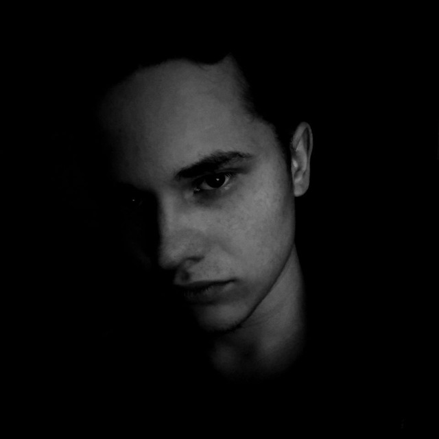

Welcome to my Biography!

Hi, my name is Anton Grigorenko.
I was born on July 18, 2004, in a beautiful village called Dubiivka.At age 3, I went to kindergarten, where I found many friends who are still with me.
In 2010, I entered the Dubiiv school, where I studied hard, was obedient,
attended sports sections such as volleyball,
and basketball, and I received awards for this and good academic achievements.
After graduating from school, I passed an external independent assessment and submitted my documents to the university of my dreams, Cherkasy State Technological University. He enrolled in the 1st course in the "Software Engineering" speciality.
Now I study at CSTU, study hard, and learn different programming languages, create websites.
My brother Max, was born at 14.05.1980.
My sister Olga, was born at 08.05.1984.
My sister Ann, was born at 05.11.1992.